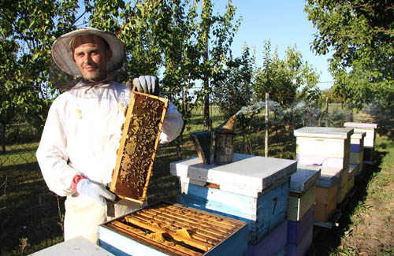

Arrangements for Pollination Services
The information provided in this section is not a substitute for the services or advice of a qualified attorney.
Obligations of beekeepers and growers
A pollination agreement means that a beekeeper agrees to place their pollinators on the property or leased land of a grower during the bloom of their crop for pollination purposes. The grower agrees to pay the beekeeper, usually on a per-hive basis. It is best to begin the arrangements for spring pollination services before the beginning of winter, so that the beekeeper can adequately prepare and ensure the availability of pollinators.
Some beekeepers and growers prefer to do business on the basis of a handshake, while others prefer the protection from legal and liability issues that a formal contract can offer to both sides. A contract does not imply mistrust of either party by the other, rather it codifies their arrangement in the face of uncertainty, and affords peace of mind to both. If a business relationship sours, the involvement of banks and lawyers can complicate matters very quickly without a contract,, and usually to the detriment of both parties. At a minimum, the contract should include information addressing the following points:
-
Addresses
-
Physical and mailing addresses and telephone numbers of the beekeeper and the grower.
-
Physical location of the crop where the pollinators will be deployed (address, or coordinates).
-
-
Terms of the Contract
-
Because ‘bloom’ has variable and uncertain timing, the grower and beekeeper should agree to a notice period (for instance, 48 hours) within which bees must be on the crop after the grower has informed the beekeeper that the crop has reached the appropriate point in the bloom (for example, 25%). Alternatively, a target date for deployment can be agreed upon.
-
The duration of deployment should be specified, or a notice period (for instance, 48 hours) within which bees must be removed from the crop after the beekeeper has been informed. A maximum length of deployment should be specified, after which the bees are removed or a new contract negotiated.
-
-
Payment
-
Price per hive for the duration of the deployment.
-
Number and location of hives on the grower's property.
-
Due date for payment, and any additional charge for late payment if applicable.
-
Any bonuses or penalties for deviations from minimum colony strength should be explicitly stated.
-
Any compensation to be paid to the beekeeper for additional movement of bees requested by the grower, for instance if the grower wishes to spray pesticides on the crop.
-
-
Responsibilities of the Beekeeper
-
The beekeeper agrees to deploy and remove bees within an agreed time period when notified to do so by the grower.
-
The beekeeper will provide colonies of a specified minimum strength (see Section 4.4). This is typically described in terms of number of chambers ("storeys") of each hive, number of frames covered with adult bees, and/or number and area of frames with brood.
-
The beekeeper will open hives and demonstrate that minimum strength conditions have been met upon the grower's request. Alternatively and by mutual consent, a third party qualified to do so may certify minimum strength and provide documentation that it has been met.
-
The beekeeper will maintain the colonies at this required strength for the duration of the contract.
-
-
Responsibilities of the Grower
-
The grower will provide clear instructions and suitable site(s) where bees are to be deployed. The grower will also permit access to the beekeeper and tovehicles for colony maintenance activities during the period of deployment.
-
The grower will provide notice to the beekeeper to deploy bees on the crop when an appropriate stage of bloom is reached.
-
The grower will provide notice to the beekeeper to have the bees removed prior to the expiry of the contract.
-
The grower agrees to provide a source of uncontaminated water to the bees within a specified distance of the hives .
-
The grower will assume liability if the bees or equipment are damaged, destroyed, or lost (including criminal vandalism or theft by trespassers) while on the grower's property.
-
The grower will assume liability for any stinging incidents to employees or members of the public (including trespassers) while the bees are deployed.
-
The grower agrees to provide notice to the beekeeper if pesticides are to be used by the grower or the grower's neighbour (if applicable) while the bees are deployed. Furthermore, if such notice is NOT given, the grower assumes liability for damage resulting from use of pesticides while the bees are present, whether through misuse of the product (i.e. application to a blooming crop), accident such as drift or equipment malfunction, or even activities of a neighbouring grower that may or may not be aware that the bees are present.
-
-
Addenda
-
Any other conditions, requested by either party, agreed to by both parties.
-
Additional information that may be included in a pollination contract:
-
Methods for conflict resolution. Sample text used in Washington State sample contract: "If any problem arises between the parties involved in this contract that cannot be resolved, then the problem(s) shall be settled by arbitration. Each party will choose an arbitrator within ten days to act in their behalf; these two shall select a third by mutual consent and a decision agreed upon by any two of these arbitrators shall be binding. The cost of any arbitration shall be shared equally by grower and beekeeper."
-
Money to be paid to the beekeeper to compensate for loss of bees if the grower is found to be in violation of the pesticide exposure clause. Definition of threshold damage at which payment is owed (i.e. 50% loss of adult bees in a hive) should be stated here.
Sample agreements and contracts
There are numerous sample agreements and contracts available online. Some are specific to particular areas, such as examples from the Pacific Northwest. The states of Washington and Oregon are unusual in having legislated regulations for colony strength and government inspectors to evaluate colony strength upon request. Other examples are more general, and have been recommended for use all over the world. The sample contracts below are examples only, and remain the property of the owner.
Bumble bee sample contract (Koppert)
Honey bee sample contract 1
Honey bee sample contract 2
Honey bee sample contract 3
Honey bee sample contract 4 - editable MS Word version


Selected References
Decourtye, A., Mader, E., & Desneux, N. 2010. Landscape enhancement of floral resources for honey bees in agro-ecosystems. Apidologie 41:264-277.
Delaplane, K.S. & Mayer, D.F. 2000. Crop Pollination by Bees. CABI Publishing, New York.
Dicklow, M.B., Firman, R.D., Rupert, D.B., Smith, K.L, & Ferrari, T.E. 1986. Controlled enpollination of honey bees (Apis mellifera): bee-to-bee and bee-to-tree pollen transfer. In Mulcahy, D.L. et al. (eds.) Biotechnology and Ecology of Pollen. Springer-Verlag, Berlin.
Ellis, A. & Delaplane, K.S. 2009. An evaluation of Fruit-BoostTM as an aid for honey bee pollination under conditions of competing bloom. Journal of Apicultural Research 48:15-18.
Free, J.B. 1993. Insect Pollination of Crops, 2nd edition. Academic Press.
Kremen, C., Williams, N.M., Bugg, R.L., Fay, J.P., & Thorp, R.W. 2004. The area requirements of an ecosystem service: crop pollination by native bee communities in California. Ecology Letters 7:1109–1119.
Lait, C.G., J.H. Borden, E. Kovacs, O.E. Moeri, M. Campbell and C.M. Machial. 2012. Treatment with Synthetic Brood Pheromone (SuperBoost) Enhances Honey Production and Improves Overwintering Survival of Package Honey Bee (Hymenoptera: Apidae) Colonies. Journal of Economic Entomology, 105:304-312.
Morandin, L.A. & Winston, M.L. 2006. Pollinators provide economic incentive to preserve natural land in agroecosystems. Agriculture, Ecosystems, & Environment 116:289-292.
Morandin, L.A., Winston, M.L., Abbott, V.A., & Franklin, M.T. 2007. Can pastureland increase wild bee abundance in agriculturally intense areas? Basic and Applied Ecology 8:117-124.
Sagili, R.R. & Burgett, D.M. 2011. Evaluating honey bee colonies for pollination: A guide for commercial growers and beekeepers. Pacific Northwest Extension Publication #PNW 623.
Scott-Dupree, C.D., Winston, M., Hergert, G., Jay, S.C., Nelson, D., Gates, J., Termeer, B., & Otis, G. 1995. A guide to managing bees for crop pollination. Canadian Association of Professional Apiculturists, Aylesford NS.
Sheffield, C.S., Westby, S.M., Smith, R.F., & Kevan, P.G. 2008b. Potential of bigleaf lupine for building and sustaining Osmia lignaria populations for pollination of apple. Canadian Entomologist 140:589-599.
Slingerland, K., Fisher, H., & Hunter, D. 2002a. Pear cultivars. OMAFRA FactSheet 02-039.
Trhlin, M. & Rajchard, J. 2011. Chemical communication in the honeybee (Apis mellifera L.): a review. Veterinarni Medicina 56:265-273.
Wells, P., Wells, H., Vu, V., Vadehra, N., Lee, C., Han, R., Han, K., & Chang, L. 1993. Does honey bee Nasonov pheromone attract foragers? Bulletin of the Southern California Academy of Sciences 92:70-77.
Zurbuchen, A., Cheesman, S., Klaiber, J., Muller, A., Hein, S., & Dorn, S. 2010. Long foraging distances impose high costs on offspring production in solitary bees. Journal of Animal Ecology 79:674–681.